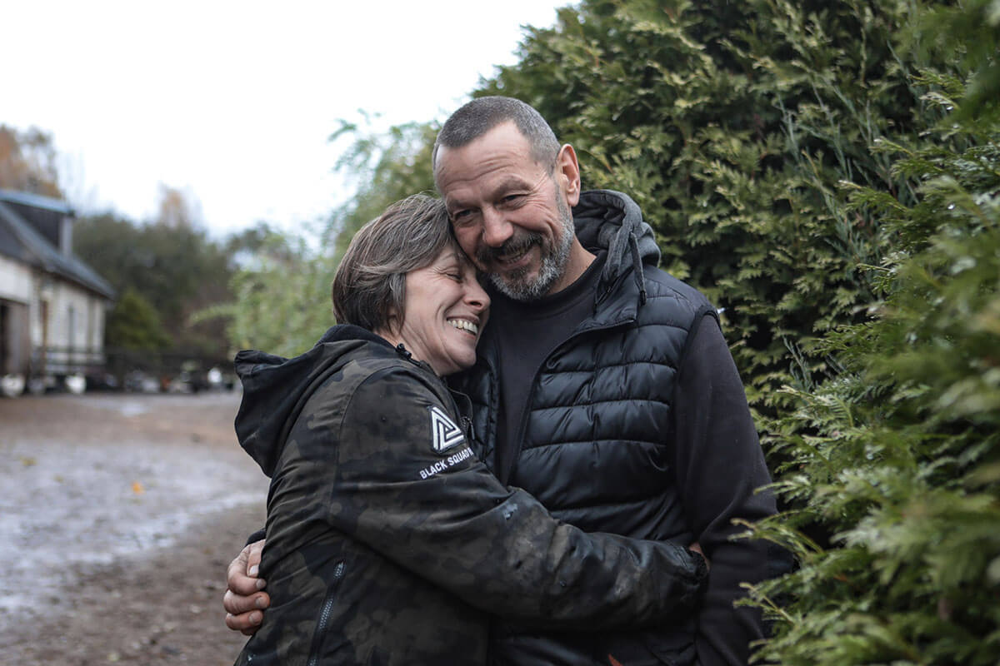
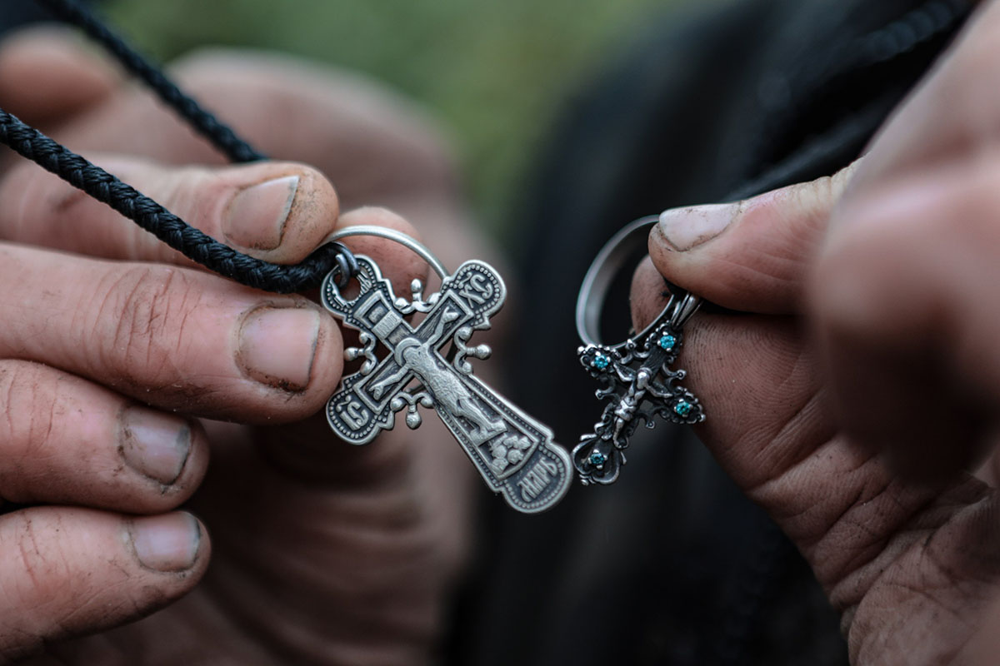
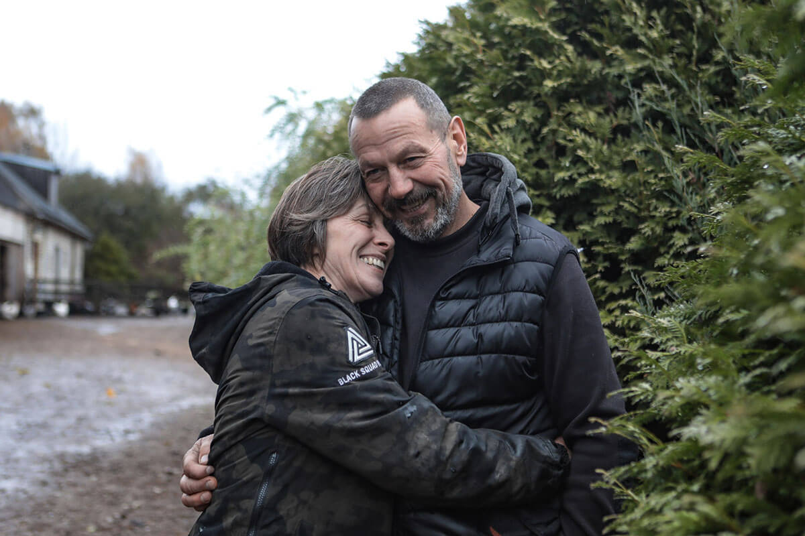
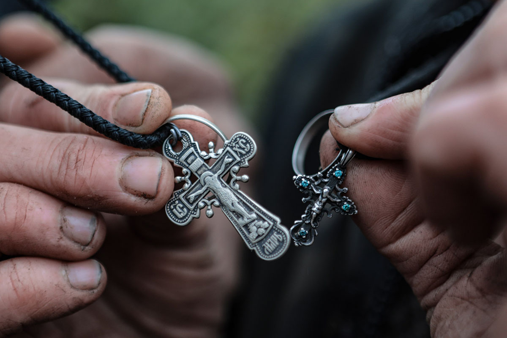

История переезда
Около 20 лет назад Оксана Плешко и Олег Макоско решили поменять столичную прописку на сельскую. И с тех пор ни разу не пожалели. Живут они в деревне Недреске Минского района, да только не одни… Подробности невероятной истории читайте в «Живом репортаже» Екатерины Кваченок.
Наши подопечные
На семейном подворье фермерского хозяйства «Олекса-ферм» сегодня множество обитателей: лошади, козы, куры, свиньи, гуси, павлины, корова, бык, кошки, собаки. Тяга к сельской жизни у Оксаны были с детства — бабушка и дедушка держали большое хозяйство. Позже девушка и сама увлеклась лошадьми, занималась в Ратомке, а затем тренировала.
История Буяна
Через какое-то время случилась первая история спасения. Буян сильно поранился, врачи говорили, что лечение бессмысленно и его отдадут на мясо. Я поняла, что не могу позволить этому случиться. Выкупила Буяна, арендовала у местного конюха сарай, поселила его туда. Тогда мы с Олегом решили: продавать жильё в Минске и покупать дом в деревне.
Мы не успели отойти от знакомства с грациозными лошадьми, как фермеры подвели нас к следующим обитателям дома — быку Фердинанду и его спутнице корове Жозефине. Заглянули мы в гости и к вьетнамской свинке Черничке. Но и это далеко не все спасённые животные фермы…
— Стараемся создать для них условия как дома — максимально приближённые к естественной среде обитания. И даём шанс на новую жизнь, — поделились супруги.

У Оксаны и Олега четверо замечательных детей, которых они с самого детства приучают к сельскому труду. За каждым ребёнком закреплены свои обязанности. Дочка Саша с лошадьми помогает, корову может покормить и подоить. Аня за козочками смотрит. Сын Святослав отвечает за собак и котов. Каждый из семейства — на подхвате!
— Часто у нас спрашивают: «Зачем вам столько животных? Ради чего вы всё это делаете?» А мы по-другому и не можем. Практически все деньги уходят на лечение — благо, многому я научилась со времён работы в Ратомке. И если не требуется операция, могу поставить животное на ноги сама, — рассказала героиня. — Наши соседи часто обращаются с просьбами вылечить их питомцев. А я никому не отказываю — опять же, по-другому не умею.
Кстати, все сельскохозяйственные постройки на своём участке фермеры возвели без чужой помощи — вдвоём, своими руками, учились по роликам в интернете.
— Трудности нас никогда не пугали, только ещё больше сплотили. И если бы мне 20 лет назад сказали, что я перееду жить в деревню, построю дом, заведу хозяйство и буду возить сено в тракторе — ни за что бы не поверил, — смеётся Олег.
«А сейчас не представляю жизнь другой. Всё благодаря Оксане — она моя сила. И мы — одна команда». — Олег Макоско